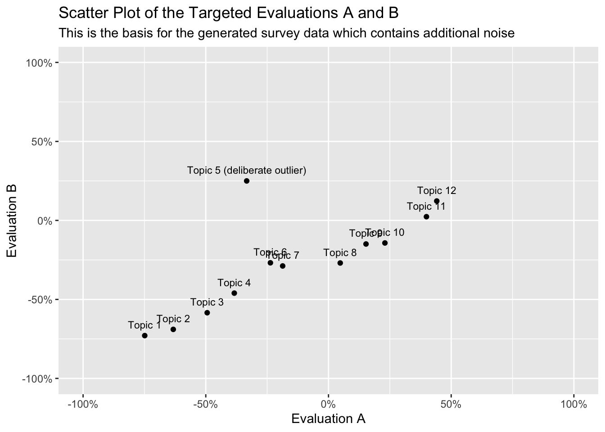

This Quarto notebook is designed to generate synthetic data using the faux package, providing an illustration for the analysis and visualization of micro-scenarios. The generated dataset closely resembles datasets exported from Qualtrics and its Loop & Merge function. The data incorporates pre-defined characteristics, including well-defined means and correlations within and between the evaluation dimensions.
Keywords
Micro scenarios, R
Introduction
This notebook generates synthetic data to demonstrate the analysis of a micro-scenario-based study. The corresponding analysis notebook is located in the same folder. For detailed information on this approach and guidance on designing and analysing studies, please refer to the main article, which you can find and cite here:
Brauner, Philipp (2024) Mapping acceptance: micro scenarios as a dual-perspective approach for assessing public opinion and individual differences in technology perception. Frontiers in Psychology 15:1419564. doi: 10.3389/fpsyg.2024.1419564
The general concept behind this simulated dataset is to mimic the data export from typical survey software systems, like Qualtrics. However, the data is clean, devoid of additional variables, speeders, or erroneous inputs requiring cleaning. Furthermore, the dataset is structured to exhibit the desired properties of a micro-scenario-based survey, showcasing specific patterns among topics and a defined correlation pattern for evaluation dimensions.
For generating synthetic data, I use the faux package; guidance can be found in the package vignette.
Load libraries
In the analysis, I rely on the tidyverse and ggplot packages. Additionally, for generating synthetic data with specific properties (e.g., pre-defined means and correlations between variables), I utilize the faux package.
library(faux) # generate correlated multivariate normal data
************
Welcome to faux. For support and examples visit:
https://scienceverse.github.io/faux/
- Get and set global package options with: faux_options()
************
library(matrixcalc) # check positive-definiteness of matriceslibrary(Matrix) # nearPD() repairs a near-valid correlation matrixlibrary(tidyverse)
Warning: Paket 'ggplot2' wurde unter R Version 4.5.2 erstellt
── Conflicts ────────────────────────────────────────── tidyverse_conflicts() ──
✖ tidyr::expand() masks Matrix::expand()
✖ dplyr::filter() masks stats::filter()
✖ dplyr::lag() masks stats::lag()
✖ tidyr::pack() masks Matrix::pack()
✖ tidyr::unpack() masks Matrix::unpack()
ℹ Use the conflicted package (<http://conflicted.r-lib.org/>) to force all conflicts to become errors
library(scales) # percent_format() for axis labels
Attache Paket: 'scales'
Das folgende Objekt ist maskiert 'package:purrr':
discard
Das folgende Objekt ist maskiert 'package:readr':
col_factor
library(ggplot2) # graphicslibrary(ggrepel) # non-overlapping text labels in scatter plots
Warning: Paket 'ggrepel' wurde unter R Version 4.5.2 erstellt
library(knitr) # kable() for tables
Create Synthetic Data
In this section, I generate synthetic data that resembles a real Qualtrics survey export. Figure 1 illustrates the expected data structure: each row represents one participant’s responses.
Figure 1: Illustration of typical survey data utilizing the micro-scenario approach, incorporating user demographics, additional user factors, and topic evaluations.
The dataset contains a unique participant identifier (id), a user-level variable (e.g., attitude towards a topic), and N=12 (adjustable) topic assessments with two columns per topic—one for each evaluation dimension. Here, perceived risk and perceived utility are used as the two dimensions; these can be replaced or extended as needed.
The two dimensions are constructed to be inversely correlated across topics (with a non-zero intercept), mimicking a typical risk–utility trade-off pattern.
N <-12# number of topics to simulateTOPICS <-read.csv2("matrixlabels.csv") # topic labels for the scatter plot# Define population means for dimensions A and B on a [-1, +1] scale.# The sequences are inversely correlated (A increases, B increases more slowly),# with a shared positive intercept so not all topics are at zero.evaluationA <-seq(-0.75, 0.50, length.out = N)evaluationB <-seq(-0.75, 0.10, length.out = N)# Add small random noise to each mean to make the pattern more realisticfor (i in1:N) { evaluationA[i] <- evaluationA[i] +rnorm(1, mean=0, sd=0.05) evaluationB[i] <- evaluationB[i] -rnorm(1, mean=0, sd=0.05)}# Manually override one topic to act as an outlier (high B, moderate-low A)evaluationA[5] <--1/3evaluationB[5] <-+1/4# Concatenate means for both dimensions into a single vector (required by rnorm_multi)combinedMeans =c(evaluationA, evaluationB)

Figure 2: Target topic evaluations. Noise due to random sampling will be added in a later step.
The variables for the topic evaluations must adhere to a standardized naming scheme, i.e., a01_matrix_02, where 01 represents the ID of the queried topic, 02 stands for the queried evaluation dimension, and matrix denotes the name of the variable block in the survey tool. This is the naming scheme used by Qualtrics.
# Build variable names following the Qualtrics Loop & Merge scheme:# "a{topic}_matrix_{dimension}", e.g. a1_matrix_1, a1_matrix_2, ..., a12_matrix_2varnames <-c(paste0("a", 1:N, "_matrix_1"), paste0("a", 1:N, "_matrix_2"))
The two evaluation dimensions are specified to be positively correlated within each dimension across topics (i.e., topics that score high on risk tend to score similarly across participants), and negatively correlated between dimensions (topics perceived as risky tend to be perceived as less useful). The sampled data will approximate but not exactly match these population parameters, as expected from random sampling.
# Helper: generate an n×n correlation matrix with off-diagonal values# drawn uniformly from `range`. The matrix is made symmetric by copying# the lower triangle to the upper triangle, and the diagonal is set to 1.generate_cor_matrix <-function(n, range =c(0.2, 0.6)) { corr_values <-matrix(runif(n^2, range[1], range[2]), nrow = n)for (i in1:n) {for(j in1:n) { corr_values[i,j] =max(-1, min(1, corr_values[i,j])) # clip to [-1, 1] } }for (i in1:n) {for(j in1:n) { corr_values[i,j] = corr_values[j,i] # enforce symmetry } }diag(corr_values) <-1# a variable is perfectly correlated with itself corr_values}# Within-dimension correlation matrices:# Topics within the same dimension are moderately positively correlated.cor_matrix_A <-generate_cor_matrix(N)cor_matrix_B <-generate_cor_matrix(N, range =c(0.3, 0.5))# Between-dimension correlation matrix:# Risk and utility are negatively correlated across topics (r = -0.25).negative_corr <--.25cor_matrix_AB <-matrix(negative_corr, nrow = N, ncol = N)# Assemble the full 2N × 2N block correlation matrix:# [ cor_A cor_AB ]# [ cor_AB' cor_B ]# This must be symmetric and positive-definite for rnorm_multi to work.cor_matrix <-matrix(0, nrow =2* N, ncol =2* N)cor_matrix[1:N, 1:N] <- cor_matrix_A # upper-left: A–Acor_matrix[(N+1):(2*N), (N+1):(2*N)] <- cor_matrix_B # lower-right: B–Bcor_matrix[1:N, (N+1):(2*N)] <- cor_matrix_AB # upper-right: A–Bcor_matrix[(N+1):(2*N), 1:N] <-t(cor_matrix_AB) # lower-left: B–A (transpose for symmetry)# Random block assembly has no guarantee of producing a mathematically valid# (positive-definite) correlation matrix, so rnorm_multi() can occasionally fail# with "correlation matrix not positive definite" here. Instead of looping and# hoping a re-drawn matrix happens to be valid, project it onto the nearest# valid positive-definite correlation matrix; this is deterministic, always# succeeds, and only nudges the requested correlations slightly.cor_matrix <-as.matrix(Matrix::nearPD(cor_matrix, corr =TRUE, keepDiag =TRUE)$mat)
Check the validity of the data
Before proceeding, we verify that the assembled correlation matrix is symmetric and positive-definite—both required by rnorm_multi. A valid correlation matrix is symmetric by definition, but the block assembly above can occasionally produce a matrix that is not positive-definite due to numerical issues or near-linear dependencies between the blocks. The Matrix::nearPD() repair step above corrects this automatically, so the diagnostics below should always report success; no re-running or looping is needed.
This step is not necessary if you already have real survey data, as it specifically pertains to the creation of synthetic data.
Now we draw a random sample from the population defined by the means and correlation matrix above. Variables are named following the required Qualtrics naming scheme defined earlier.
data <-rnorm_multi(varnames = varnames, # column names following the Qualtrics schemen =100, # number of simulated participantsmu = combinedMeans, # per-topic population means on [-1, +1] scalesd =0.25, # within-topic standard deviationr = cor_matrix, # full block correlation matrixempirical =FALSE# sample from population parameters (not fix sample stats exactly))
Recode data
Finally, we recode the continuous simulated values to resemble typical Likert-scale survey responses. First, values are clipped to \([-1, +1]\) (random sampling can occasionally exceed these bounds). Then they are linearly transformed and rounded to discrete integer values from \(1\) to \(7\).
data <-as.data.frame(data) %>% dplyr::mutate(across(everything(), ~ifelse(. <-1, -1, ifelse(. >1, 1, .)))) %>%# clip to [-1, +1] dplyr::mutate(across(everything(), ~ (.+1)/2)) %>%# shift to [0, 1]: x' = (x+1)/2 dplyr::mutate(across(everything(), ~ (6*.))) %>%# stretch to [0, 6]: x' = 6x dplyr::mutate(across(everything(), ~1+round(.))) # round and shift to {1,...,7}
Finally, we add a participant ID and a simulated user-level variable. The user variable is derived from the already-simulated topic scores and is therefore moderately correlated with them.
data <- data %>% dplyr::mutate(id =paste0("fakeparticipantid-", row_number())) %>%# unique participant ID# uservariable is correlated (r = 0.5) with the sum of two topic scores,# simulating a user trait related to the evaluated dimensions dplyr::mutate(uservariable =rnorm_pre(a1_matrix_1+a2_matrix_1, mu =10, sd =2, r =0.5)) %>% dplyr::relocate(id, uservariable) # move id and uservariable to the front
Save data
Finally, we save the generated data to an RDS file.
Acknowledgements:
This approach evolved over time and through several research projects. I would like to thank all those who have directly or indirectly, consciously or unconsciously, inspired me to take a closer look at this approach and who have given me the opportunity to apply this approach in various contexts. In particular, I would like to thank: Ralf Philipsen, without whom the very first study with that approach would never have happened, as we developed the crazy idea to explore the benefits of barriers of using “side-by-side” questions in Limesurvey. Julia Offermann, for indispensable discussions about this approach and so much encouragement and constructive comments during the last meters of the manuscript. Martina Ziefle for igniting scientific curiosity and motivating me to embark on a journey of boundless creativity and exploration. Felix Glawe, Luca Liehner, and Luisa Vervier for working on a study that took this concept to another level. Julian Hildebrandt for in-depth discussions on the approach and for validating the accompanying code. Tim Schmeckel for feedback on the draft of this article.
Throughout the process I received feedback from editors and reviewers that helped to question this approach and improve the foundation of this approach. No scientific method of the social sciences alone will fully answer all of our questions. I hope that this method provides a fresh perspective on exciting and relevant questions.
Funded by the Deutsche Forschungsgemeinschaft (DFG, German Research Foundation) under Germany’s Excellence Strategy – EXC- 2023 Internet of Production – 390621612.
![]()